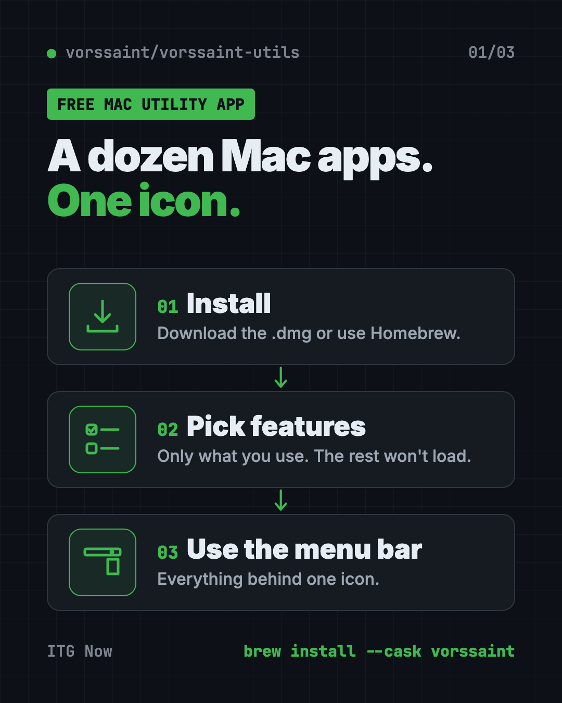
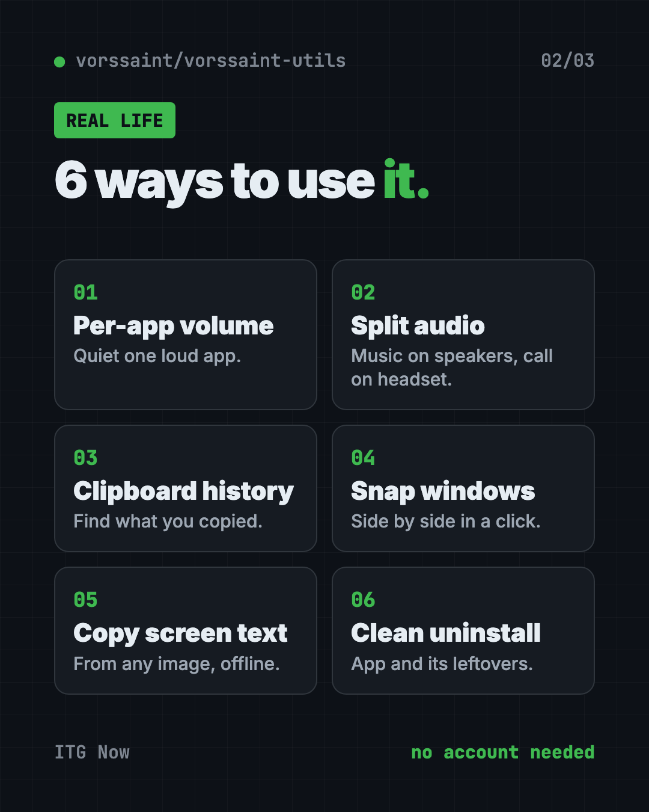
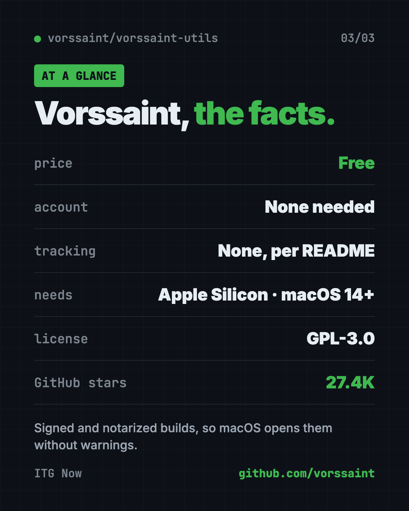

Vorssaint Utils: Free Mac Utility App for Menu Bar (2026)
- Free AI tools
- Published 2026-10-15
- 8 min read
- Updated 2026-10-16
- Stars 27.4K
- License GPL-3.0
- By the It's Trending Global team
Vorssaint Utils is a free Mac utility app. Per-app volume, window snapping, clipboard history, a system monitor and an uninstaller behind one menu bar icon.
Vorssaint Utils is a free Mac utility app that puts per-app volume, window snapping, clipboard history, a system monitor and dozens more tools behind one menu bar icon. Its maker sums it up as "one menu bar icon doing the job of a dozen paid Mac apps."
Macs are great, but they skip some basics. You can't set the volume per app. Snapping windows side by side is clunky. There's no real clipboard history. This guide shows what Vorssaint does, how to set it up, and which parts are worth turning on first.
Key takeaways
- Free and open source under GPL-3.0. The README says it "is free and will stay that way."
- Pick only what you need. Turn on single features or start with a preset. Features you skip don't load at all.
- Private by default. No account, no analytics, no tracking, per the README.
- Needs an Apple Silicon Mac running macOS 14 Sonoma or newer.
- Popular fast: about 27.4K GitHub stars.
What is Vorssaint Utils?
Vorssaint is a toolkit that lives in your Mac's menu bar, the strip of icons at the top of your screen. Instead of buying one small app for volume, another for windows and another for the clipboard, you get them in one place.
The README (the project's main instructions page) lists the kind of tools Mac users "usually buy one by one": a volume mixer, a system monitor, an app switcher, window snapping, Dock previews, clipboard history, text snippets, a file shelf and an uninstaller.
The best part is the setup. You choose which features to install. Anything you don't pick stops loading and disappears from the app. The app only asks for the permissions your choices need.

What can Vorssaint do?
There's a lot. Here are the groups, in plain words:
| Group | Highlights from the README |
|---|---|
| Sound | Volume per app, boost quiet audio past 100%, send music to speakers while a call uses your headset |
| System health | CPU, memory, temperatures, battery health, network speed test, alerts |
| Windows | Snap windows into layouts, Dock previews, a better app switcher |
| Keyboard and mouse | Text snippets, smooth scrolling, mouse side buttons in Finder and browsers |
| Clipboard and files | Searchable clipboard history, paste as plain text, a file "shelf" near your cursor |
| Screen capture | Screenshots, scrolling captures, screen recording, copy text from the screen |
| App care | Uninstaller, cleaner for caches and leftovers, app update checker |
| Everyday | A "Dynamic Island" around the camera notch, a command bar, keep-awake timer |
There's even a Cleaning Mode that locks your keyboard while you wipe it.
How to use Vorssaint (real examples)
- Turn down one loud app. A video is blasting while you're on a call. Lower just that app with the volume mixer.
- Music on speakers, call on headphones. Per-app output sends each app's sound where you want it.
- Find what you copied an hour ago. Clipboard history keeps text, images and files, and you can search it.
- Snap two windows side by side. Use a shortcut or drag a window to the screen edge for a neat split.
- Grab text from a picture. Copy text from any part of the screen, offline. It can read QR codes too.
- Remove an app properly. The uninstaller shows the app's related files and moves them to the Trash together.
💡 Tip: Don't turn everything on at once. Start with three features you miss most, like volume mixer, clipboard history and window layout. Add more later.

Is Vorssaint Utils really free?
Yes. The app is free and open source under GPL-3.0 or later. There's no account and no paid tier in the README.
The maker asks for support through "Buy Me a Coffee," which is optional. The Vorssaint name, logo and look are trademarked separately, so copies of the code must use their own branding.
Is Vorssaint safe and private?
The README calls Vorssaint "local-first, with no account, analytics or tracking." It says the app only uses the internet for things you can see, like update checks, the speed test, Homebrew actions, optional lyrics lookup and share links you create.
Permissions get the same care. Each one is optional. The app explains each in plain words, shows which features use it, and even tells you when a permission is no longer needed, with a shortcut to turn it off.
Official builds are signed with an Apple Developer ID and notarized. That means Apple has checked them, so your Mac opens them without scary warnings.
⚠️ Heads up: Vorssaint needs a Mac with Apple Silicon (M1 or newer) and macOS 14 Sonoma or later. Older Intel Macs aren't supported.
How to install Vorssaint on your Mac
There are two official ways.
Option 1: Download it. Go to the Vorssaint releases page, download the disk image (.dmg), open it and drag Vorssaint into Applications.
Option 2: Homebrew. Homebrew is a free app installer for the Mac. Open Terminal (press Command and Space, type "Terminal") and copy and paste this:
brew install --cask vorssaint
Open Vorssaint. Pick a preset or choose single features. Then approve only the permissions it asks for.
To uninstall it later with Homebrew, copy and paste this:
brew uninstall --cask vorssaint
The README also offers a script inside the project, ./Tools/uninstall.sh, that removes Vorssaint "completely, including its settings and permissions."
Let Claude or Codex set it up for you
Claude Code and OpenAI Codex are AI helpers that can run setup steps on your Mac for you. You paste a request, it explains each step, and you approve it.
Copy and paste this:
Please help me install Vorssaint Utils from github.com/vorssaint/vorssaint-utils.
1. Check that my Mac has Apple Silicon and macOS 14 or newer.
2. Check if I have Homebrew. If yes, install with "brew install --cask vorssaint".
3. If not, tell me how to download the .dmg from the releases page instead.
4. Explain each step before you run it.
Then try asking:
Which 3 Vorssaint features should I turn on first if I mostly do video calls and email?
Read the Vorssaint permissions guide and explain which permissions the clipboard history needs.
Vorssaint's window snapping isn't working. Walk me through the troubleshooting guide.
Vorssaint Utils at a glance
| Price | Free |
| Works offline | Yes, local-first; internet only for things like updates and speed tests |
| Platforms | Mac with Apple Silicon, macOS 14 Sonoma or newer |
| License | GPL-3.0 or later (open source) |
| Account needed | No |
| GitHub stars | About 27.4K |
| Best for | Mac users who want many small upgrades without paying for many apps |

Who should use Vorssaint?
- People on lots of video calls who want quick mic mute and per-app volume.
- Creators who need screenshots, screen recording and GIFs in one place.
- Office workers juggling many windows and copy-paste jobs.
- Students who want a free clipboard history and text snippets.
- Anyone switching from Windows who misses window snapping.
Our take
Vorssaint is one of the most generous free Mac apps we've covered. The "install only what you use" setup keeps it from feeling bloated.
What we like:
- Truly free, with no account.
- Pick-and-choose features, so it stays light.
- Clear, honest privacy and permission handling.
- Signed and notarized official builds.
- Covers sound, windows, clipboard, capture and cleanup in one icon.
What to watch for:
- Apple Silicon and macOS 14+ only.
- So many options can feel like a lot at first.
- Fan Control is still marked beta.
- It's young, so expect frequent updates and small bugs.
Want more for your Mac? Try Mole, a free Mac cleaner, Thaw, which tidies a crowded menu bar, or Pake, which turns websites into tiny apps.
FAQ
Is Vorssaint Utils a free Mac utility app?
Yes. Vorssaint is free and open source under GPL-3.0. The README says it "is free and will stay that way."
Can I set the volume for each app on my Mac for free?
Yes. Vorssaint's volume mixer lets you set volume per app and boost quiet audio past 100%. The README says no audio driver is needed.
Does Vorssaint work on Intel Macs?
No. The README lists a Mac with Apple Silicon and macOS 14 Sonoma or newer as requirements.
Does Vorssaint collect my data?
The README says it has no account, analytics or tracking. It only goes online for things you can see, like updates or a speed test.
Do I have to use every Vorssaint feature?
No. You install only the features you want. Unused ones stop loading and vanish from the app.
How do I uninstall Vorssaint?
Run brew uninstall --cask vorssaint if you used Homebrew. The project also includes an uninstall script that removes its settings and permissions.
Get Vorssaint Utils: github.com/vorssaint/vorssaint-utils
Follow ITG Now on Instagram for one free, useful tool every day.
Keep reading

DBX: Free Database Client for 100+ Databases, With AI (2026)
DBX is a free database client that opens 100+ kinds of databases in a 25 MB app. Its AI helper turns plain English into database queries for you.

PureMac: Free CleanMyMac Alternative, No Subscription
PureMac is a free CleanMyMac alternative. It clears junk, fully uninstalls apps and finds duplicates, with no subscription, no tracking and no scare tactics.

Strata: Run Big Local AI on a Gaming PC, Free
Strata is a free installer that runs big, private local AI on a gaming PC. It sets up a large Qwen model, so your chats never leave your computer.